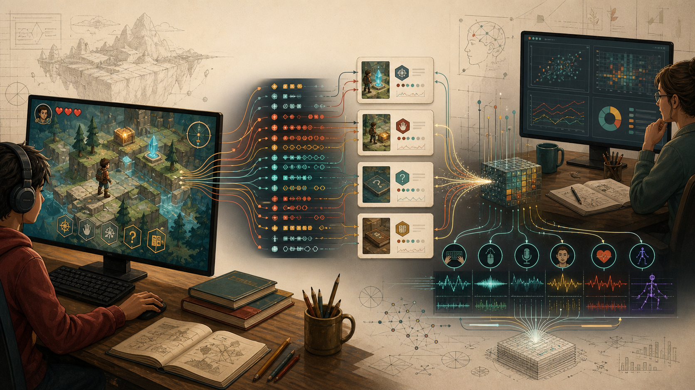
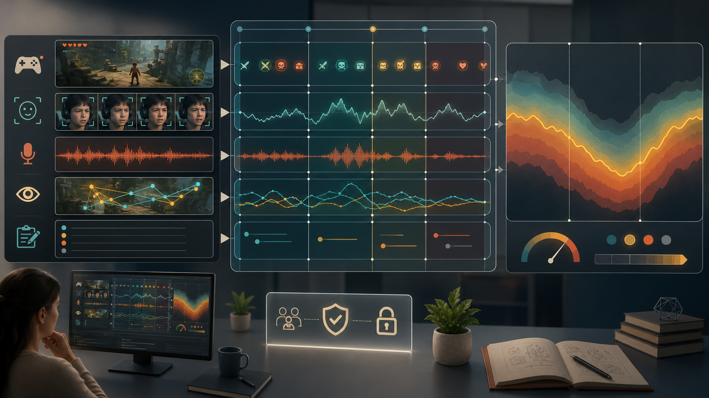
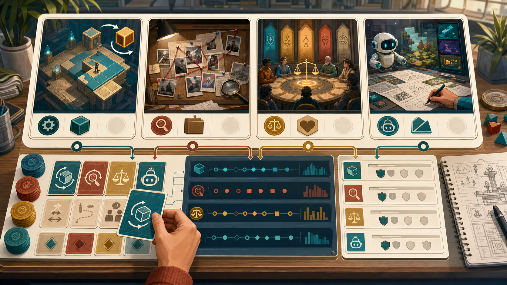

Telemetry Design for Highly Interactive Digital Learning Environments
What to log before an IVR simulation, VR lab, AI studio, cyber range, or other interactive learning environment becomes impossible to study. A visual onboarding guide for turning interaction traces into defensible evidence without confusing movement, clicks, struggle, hints, sensors, or dashboards with learning itself.
Author: Jewoong Moon, The University of Alabama · jmoon19@ua.edu

Highly interactive learning environments fail as research instruments when logging is added last.
An IVR lab, VR training scenario, simulation, game, or AI design studio can be engaging, beautiful, and still impossible to study. If the only exported fields are final score, completion, and time, later analysis cannot reconstruct strategy, support use, failure recovery, misconception patterns, embodied action, or ethical reasoning.
Only saves score, completion, and total time. Process evidence disappears.
Records every click, gaze point, pose, or controller action but not the environment state, available choices, task meaning, or support context.
Maps learning claims to interaction patterns, observable actions, structured events, and cautious interpretations.
Design the evidence chain before the event logger.
The strongest telemetry starts with the research claim, not the database table.
What do you want to say?
What capability or construct is implied?
Which task can elicit evidence?
What can be seen without guessing?
What fields preserve context?
What can be claimed safely?
The same action means different things in different environment states.
A useful event row preserves enough context to reconstruct what the learner could see, touch, move toward, manipulate, request, or revise; what support was available; and what changed next.
| Field | Why it matters | Example |
|---|---|---|
| schema_version | Keeps old traces interpretable after schema changes. | interactive-telemetry-v1 |
| environment_version | Separates content/interface effects from learner effects. | 0.3.2 |
| session_id / attempt_id | Preserves replay, persistence, and within-player structure. | S001 / A002 |
| timestamp_utc / elapsed_ms / sequence_index | Supports time-on-task, process, and synchronization. | seq=42 |
| task_id / state_id | Reconstructs where the event happened in the environment logic. | lab-safety / burner_station |
| event_type | Controlled vocabulary for analysis. | hint_opened |
| pre_state / post_state | Makes action meaning visible. | blocked_path -> hint_seen |
| privacy_tier | Controls retention, sharing, and export decisions. | low / moderate / sensitive |
Log by interaction pattern, not by interface widget.
Station entered, object grasped, tool aligned, hazard noticed, procedure step completed, instructor prompt opened.
Waypoint reached, artifact scanned, gaze dwell recorded, spatial annotation placed, route revised, debrief submitted.
Node inspected, trace run, threat port identified, quarantine attempted, packet evidence linked, after-action note submitted.
Prompt drafted, model output critiqued, disclosure edited, prototype evidence uploaded, feedback revised, reflection submitted.
| Claim | Minimum telemetry | Unsafe shortcut |
|---|---|---|
| Persistence after failure | Failure type, retry/replay, time gap, later success. | Counting total attempts without failure context. |
| Evidence-based reasoning | Evidence inspected, link created, claim submitted, sequence, revision. | Counting evidence clicks or scans as reasoning. |
| Embodied procedural skill | Tool pose, hand/controller path, object contact, sequence, safety state, corrective feedback. | Treating completion time as skill. |
| Spatial or situational awareness | Location, field of view, gaze dwell, object proximity, route choices, missed hazards. | Treating headset motion as attention or understanding. |
Before coding the logger, make the study claim inspectable.
A telemetry design review should happen before implementation freezes. The goal is to catch claims that cannot be supported, events that lack game-state context, and data that creates risk without adding evidence.
What claim are we trying to make? Write the sentence you hope to publish before deciding what to log.
Which action could support or weaken that claim? If the answer is "completion," the event plan is probably too thin.
Do we log environment state before and after the action? A movement, click, gaze point, or controller gesture has no meaning without available options, task state, failure state, and support context.
What should never be inferred? Name the off-limits claims: motivation, ability, distress, ethics, or collaboration if the design cannot support them.
| Gate | Pass condition | Red flag |
|---|---|---|
| Claim | The claim names a bounded behavior in a specific interactive task. | The claim uses broad traits such as ability, engagement, attention, or motivation. |
| Opportunity | The mission gives players a real chance to show the behavior. | The task can be completed without producing the intended evidence. |
| Observable | Events describe actions, targets, states, and results. | Event names already contain interpretations such as understood or struggled. |
| Support | Hints, feedback, retries, and idle time are logged separately. | Hint users are compared to non-users without prior-struggle context. |
| Governance | Each field has a purpose, privacy tier, and retention rule. | Raw text, audio, video, or face data is collected "just in case." |
Most telemetry mistakes are interpretation mistakes.
Logs are traces of interaction, not direct measures of learning. Use the clinic below to rewrite common overclaims into defensible evidence statements.
| Raw signal | Bad claim | Safer claim | Needed evidence |
|---|---|---|---|
| More clicks | The learner was more engaged. | The learner interacted with more objects or options. | Object relevance, mission state, sequence, and whether clicks were exploratory or repetitive. |
| Longer time | The learner persisted. | The learner spent more active time in the mission. | Focus state, idle filtering, failures, retries, pauses, and later recovery. |
| Hint use | The learner was weaker. | The learner accessed support after a particular prior state. | Hint availability, pre-hint attempts, error type, timing, and post-hint recovery. |
| Failure count | The learner has low ability. | The learner encountered repeated failure states in this task. | Failure type, difficulty, optional replay, feedback, revisions, and eventual success. |
| Headset motion | The learner was attentive. | The learner moved their head or viewpoint during a task window. | Field of view, target visibility, task goal, dwell time, object proximity, and triangulation with task actions. |
| Facial distress | The learner was failing to learn. | The model detected affective distress signals during an interaction window. | Sensor quality, synchronization, classifier confidence, task context, and triangulation with event traces. |
IVR lab safety: from embodied action to evidence-use traces.
In an immersive lab safety task, learners move through a virtual lab, inspect hazards, grasp tools, follow procedures, and respond to warnings. The telemetry design should make embodied decision opportunities visible without pretending that motion, gaze, or completion directly equals understanding.
Learners used procedural and environmental evidence to make safe lab decisions in an IVR scenario.
task_id, station state, hazard visibility, tool state, hand/controller pose, field of view, and available support.
Counting completed steps or headset movement as procedural understanding without knowing what the learner could see, touch, or choose.
| Moment | Event | Key fields | Interpretation boundary |
|---|---|---|---|
| Station approached | zone_entered | zone_id, position, field of view, hazard visibility, sequence. | Shows opportunity to notice, not noticing. |
| Tool is handled | tool_manipulated | Tool id, grip state, pose, target object, pre/post state. | Shows action path, not skill by itself. |
| Hazard is checked | hazard_inspected | Hazard id, gaze dwell, proximity, required step, support availability. | Shows inspection behavior, not complete understanding. |
| Procedure changes | step_revised | Prior step, new step, feedback shown, elapsed active time. | Shows revision behavior, not a complete procedural diagnosis. |
| Scenario ends | task_completed | Safety violations, unresolved hazards, support use, completion state. | Supports bounded claims about safe-procedure traces in this scenario. |
Use standards logic even when your environment needs custom events.
Highly interactive environments often require domain-specific events, but the actor-action-object-context pattern from xAPI and Caliper keeps traces portable and easier to explain to collaborators.
| Local field | xAPI-style role | Caliper-style role | Environment-specific note |
|---|---|---|---|
| user_id | Actor | Actor | Pseudonymous player or team id. |
| event_name / action | Verb | Action | Controlled vocabulary such as evidence_linked or hint_used. |
| target_id | Object | Object / entity | Tool, hazard, evidence item, puzzle node, route, prompt, NPC, or artifact. |
| task_id / scene_id | Context | Generated event context | Needed for comparing the same action across tasks, scenes, or stations. |
| pre_state / post_state | Extensions | Extensions / entity data | Preserves the state transition that gives an action meaning. |
| privacy_tier | Local governance extension | Local governance extension | Not an assessment construct; used for retention and sharing rules. |
Preserve actor, action, object, result, context, time, and versioning even when the interaction vocabulary is custom.
Forcing all activity into generic verbs until scene state, pose, field of view, support, failure states, and evidence links disappear.
When logs are not enough, add modalities carefully.
Moon et al. tracked distress in an educational game by fusing gameplay logs with facial-expression data; immersive VLE research extends this same logic to gaze, pose, motion, speech, object manipulation, and spatial traces. The lesson is not that every environment needs sensors. The lesson is that affective, embodied, collaborative, and spatial claims require evidence beyond raw interaction counts or much stronger contextual logging.

The construct is affective, collaborative, embodied, spatial, or strategic and event traces alone cannot distinguish likely interpretations.
The claim can be supported by structured event traces, or raw media would create unnecessary privacy risk.
Record modality availability, sync offset, missingness, and confidence. A missing sensor stream is data about the study design.
Stealth assessment explains why telemetry has to start with evidence.
The video below is included because it gives the assessment-design logic behind this guide: interaction traces become useful evidence only when the target claims, observable behaviors, and interpretation rules are planned in advance.
Valerie Shute, "Stealth assessment: embedded evidence-based assessment in games." Watch it for the ECD logic: define the competency, identify observable evidence, and design tasks so logs can support a defensible interpretation.
A motivational talk about VR, games, or simulations may be interesting, but it does not automatically explain telemetry design. Embed only videos that directly clarify logging, evidence, assessment, multimodal traces, privacy, or validity.
How to choose and embed a YouTube video
| Step | Decision rule | What to write beside the embed |
|---|---|---|
| 1 - Match | The video must support a specific claim in the guide, not just the general topic. | "This video is here because it explains..." |
| 2 - Verify | Check the speaker, title, host page, date, and whether the content is still accessible. | Link the source archive or official page near the iframe. |
| 3 - Narrow | If only part of the video is relevant, start at the useful timestamp. | Tell readers what to watch for in that segment. |
| 4 - Protect | Use the privacy-enhanced YouTube domain when possible. | Use youtube-nocookie.com in the iframe source. |
| 5 - Bound | State what the video does not cover. | Pair the video with schema, evidence-map, or troubleshooting sections. |
Embed pattern used here
For multimodal learning analytics, Marcelo Worsley's CIRCL webinar archive is a strong companion resource. It is linked rather than embedded here because the verified archive page is not a YouTube embed target.
Play a tiny Tetris-like task and watch the telemetry accumulate.
This mini simulation is intentionally simple: it shows how a highly interactive task can emit interpretable events while the learner acts. Movement, rotation, drop, lock, line clear, and failure are logged as stateful traces rather than treated as learning by themselves.
Keyboard: Left Right move, Up rotate, Down soft drop, Space hard drop.
Each row preserves the action, task state, piece, result, and sequence index. The log is evidence about interaction behavior, not a direct measure of spatial reasoning or learning.
| # | event_type | action | state | payload |
|---|
Action sequences, recovery after blocked moves, support-free persistence, line clears, and failure-state timing.
It cannot prove spatial ability, motivation, mastery, or learning without a task model, outcome evidence, and interpretation rules.
It is a compact stand-in for IVR/VR/simulation tasks: actions only become interpretable when state, target, result, and sequence are logged together.
Pick an interaction pattern and a claim. The logging plan changes.

Use the output as a first-pass telemetry design review, not as a substitute for an IRB, validity, or analysis plan.
When your traces are already messy, diagnose the failure mode.
| Symptom | Likely cause | How to troubleshoot |
|---|---|---|
| Events are out of order | Client clock drift, async writes, offline upload. | Sort by sequence_index; keep server receipt time separate. |
| Same action has different meanings | Environment state was not logged. | Add pre_state, post_state, task_id, scene_id, and available_actions. |
| Hint analysis is misleading | Hint use is confounded with prior struggle. | Rebuild around pre-hint attempts, errors, elapsed time, and recovery. |
| Time-on-task is inflated | Idle time, tab switching, classroom interruptions. | Log focus/blur, pause/resume, inactivity thresholds, and active windows. |
| MMLA streams do not align | Video/audio/sensor start times differ from game time. | Add sync markers and store sensor start offsets. |
| Model accuracy looks high but useless | Leakage from outcome or post-outcome events. | Train only on features available before the prediction point. |
More sensitive data needs a stronger reason.
Pseudonymous interaction events with no free text, media, biometrics, or precise body traces. Usually enough for sequence, support-use, and completion analyses.
Free-text rationale, open response, or derived feature that may reveal sensitive information. Needs careful export rules.
Raw audio, video, face, gaze, biometric, exact location, or directly identifying data. Collect only when the claim needs it.
Public-safe files for teams and agents.
Selected sources for this guide.
Assessment and validity anchors
- Mislevy, R. J., Almond, R. G., & Lukas, J. F. (2003). A brief introduction to evidence-centered design. ETS Research Report Series. https://doi.org/10.1002/j.2333-8504.2003.tb01908.x
- Shute, V. J., & Ventura, M. (2013). Stealth assessment: Measuring and supporting learning in video games. MIT Press. https://doi.org/10.7551/mitpress/9589.001.0001
- Winne, P. H. (2020). Construct and consequential validity for learning analytics based on trace data. Computers in Human Behavior, 112, 106457. https://doi.org/10.1016/j.chb.2020.106457
- Gasevic, D., Greiff, S., & Shaffer, D. W. (2022). Towards strengthening links between learning analytics and assessment: Challenges and potentials of a promising new bond. Computers in Human Behavior, 134, 107304. https://doi.org/10.1016/j.chb.2022.107304
Interactive environments, simulations, and game analytics
- Chung, G. K. W. K. (2015). Guidelines for the design and implementation of game telemetry for serious games analytics. In Serious games analytics. https://doi.org/10.1007/978-3-319-05834-4_3
- Lu, W., Griffin, J., Sadler, T. D., Laffey, J. M., & Goggins, S. P. (2023). Serious game analytics by design: Feature generation and selection using game telemetry and game metrics toward predictive model construction. Journal of Learning Analytics, 10(1), 168-188. https://doi.org/10.18608/jla.2023.7681
- Alonso-Fernandez, C., Calvo-Morata, A., Freire, M., Martinez-Ortiz, I., & Fernandez-Manjon, B. (2022). Game learning analytics: Blending visual and data mining techniques to improve serious games and to better understand player learning. Journal of Learning Analytics, 9(3), 32-49. https://doi.org/10.18608/jla.2022.7633
- Westera, W., Nadolski, R., & Hummel, H. (2014). Serious gaming analytics: What students' log files tell us about gaming and learning. International Journal of Serious Games, 1(2). https://doi.org/10.17083/ijsg.v1i2.9
- Tao, L., Cukurova, M., & Song, Y. (2025). Learning analytics in immersive virtual learning environments: A systematic literature review. Smart Learning Environments, 12, Article 43. https://doi.org/10.1186/s40561-025-00381-6
- Walkington, C., Nathan, M. J., Huang, W., Hunnicutt, J., & Washington, J. (2024). Multimodal analysis of interaction data from embodied education technologies. Educational Technology Research and Development, 72, 2565-2584. https://doi.org/10.1007/s11423-023-10254-9
Standards and implementation
- 1EdTech Consortium. (2020). Caliper Analytics specification, version 1.2. https://www.imsglobal.org/spec/caliper/v1p2/
- xAPI.com. (n.d.). xAPI overview. https://xapi.com/overview/
- Serrano-Laguna, A., Martinez-Ortiz, I., Haag, J., Regan, D., Johnson, A., & Fernandez-Manjon, B. (2017). Applying standards to systematize learning analytics in serious games. Computer Standards & Interfaces, 50, 116-123. https://doi.org/10.1016/j.csi.2016.09.014
MMLA, privacy, and video resources
- Moon, J., Ke, F., Sokolikj, Z., & Dahlstrom-Hakki, I. (2022). Multimodal data fusion to track students' distress during educational gameplay. Journal of Learning Analytics, 9(3), 97-117. https://doi.org/10.18608/jla.2022.7631
- Emerson, A., Cloude, E. B., Azevedo, R., & Lester, J. (2020). Multimodal learning analytics for game-based learning. British Journal of Educational Technology, 51(5), 1505-1526. https://doi.org/10.1111/bjet.12992
- Ochoa, X., & Worsley, M. (2016). Augmenting learning analytics with multimodal sensory data. Journal of Learning Analytics, 3(2), 213-219. https://doi.org/10.18608/jla.2016.32.10
- Cormack, A. N. (2016). A data protection framework for learning analytics. Journal of Learning Analytics, 3(1), 91-106. https://doi.org/10.18608/jla.2016.31.6
- Carter, M., & Egliston, B. (2023). What are the risks of virtual reality data? Learning analytics, algorithmic bias and a fantasy of perfect data. New Media & Society, 25(3), 485-504. https://doi.org/10.1177/14614448211012794
- Transforming Assessment. (2011). Valerie Shute: Stealth assessment: embedded evidence-based assessment in games. https://transformingassessment.com/events_7_september_2011.php
- CIRCL Center. (2016). Marcelo Worsley: Making Sense of Multimodal Learning Analytics. https://circlcenter.org/events/making-sense-of-multimodal-learning-analytics/